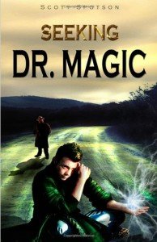

Inside the story

Chaos reigns around the world. Strange creatures, accorded the title "Phantom Ninjas" by the media, are leaping off tall buildings and somersaulting back up without any scratch - and then disappear. There follows more spontaneous acts of magic, confounding the world. Who - or what - is responsible? In the middle of the mystery arrives Detective Hetfield, a private investigator just recently retired from the FBI, who is accustomed to fame as a star witness in the murder trial of a beloved actress. Hetfield, seeking ever more celebrity to boost his profile, uses the media to put forward the theory that a person of extraordinary magical powers is behind all these incidents, and labels him Dr. Magic. Hetfield gets much more than what he bargained for when that powerful being does exist - in the form of a young man long disillusioned with his past - and cruelly takes him up on his offer.
Q. Who is your favourite character in Seeking Dr. Magic, and why?
Without a doubt, Dr. Magic himself. This is my alter ego which, I'm sure, millions of other people also conceive in their minds. Who wouldn't want to be, just for one day, yourself with super powers, charismatic, and mysterious? Making a big splash all around the world when you announce your presence?
Quotes from Seeking Dr. Magic
Detective Hetfield: "You still have to deal with it. You have to say goodbye to people. It’s just as important as saying hello.”
Detective Hetfield: "She’ll love you over and over, or she’ll leave you."
Detective Hetfield: "Make new friends. They’re the most important things in your life.”